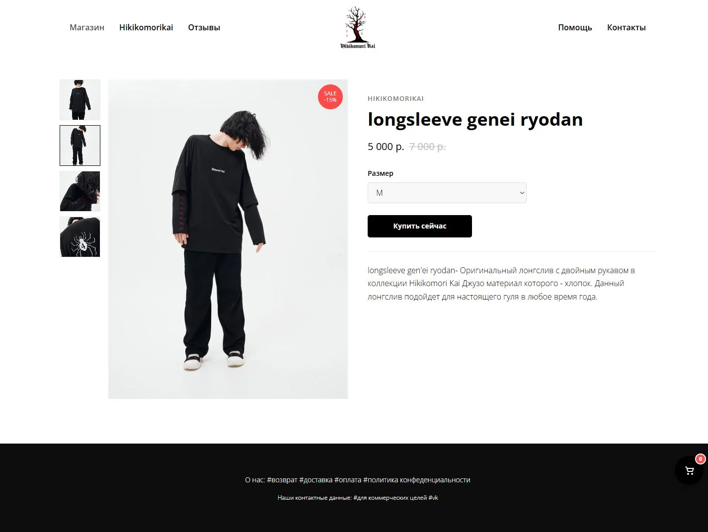

Магазин одежды
Hikikomori Kai
Восстановление и доработка магазина одежды. В центре работы были каталог, галереи вещей, выбор размера и оформление заказа.
Открыть магазин

Магазин одежды
Восстановление и доработка магазина одежды. В центре работы были каталог, галереи вещей, выбор размера и оформление заказа.
Открыть магазин